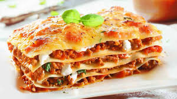
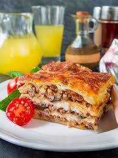

Тірамісу
Список інградієнтів:
- сир маскарпоне
- цукор
- яйця великого розміру
- печиво савоярді
- заварна кава
- ром (кавовий лікер, коньяк, бренді)
- какао-порошок або тертий чорний шоколад - для посипки
Рецепт приготування тірамісу
Помийте яйця. Це варто зробити, оскільки під час приготування тірамісу яйця не будуть термічно оброблятися.
Акуратно відокремте жовтки від білків. Білки поставте у холодильник. Додайте у жовтки цукор і розітріть суміш до
білого кольору. Можете скористуватися міксером, збиваючи на невеликій швидкості. Відокремте жовтки від білків.
Жовтки розітріть з цукором. Маскарпоне трохи розімніть та додайте до жовтків. Добре розмішайте отриману суміш.
Витягніть з холодильника білки і збийте з сіллю до утворення густої піни. Щоб перевірити, чи готові білки, треба
акуратно перевернуть ємність і при цьому білки мають залишаться в мисці. Збиту білкову масу поступово введіть
у крем, обережно перемішуючи після додавання кожної ложки. Перемішувати потрібно акуратно, круговими рухами від
низу до верху, щоб крем не втратив свою легкість. В результаті повинна вийти суміш, яка нагадує згущене молоко
за консистенцією та кольором. Збиту білкову масу введіть у крем. Змішайте еспресо з лікером.
Кожне печиво опустіть у кавову суміш на 2 секунди і розкладіть в форму, викладаючи перший шар десерту.
На шар савоярді викладіть половину крему та розподіліть по всій формі. Печиво опустіть у кавову суміш.
На шар печива викладіть половину крем.
Зверху покладіть другий шар печива, просоченого кави і накрийте його залишками вершкового крему. Поставте
тірамісу у холодильник на 8-10 годин. Стільки часу треба, аби крем повністю загус. Поставте тірамісу у
холодильник. Перед подачею посипте десерт какао або тертим шоколадом. Смачного!
.jpg)
.jpg)
 Натисни на мене
Натисни на мене
Лазанья
Список інградієнтів
Для основи:
- 800-900 г Фарш
- 1 склянка Томатний сік
- 3 ст. л. Оливкова олія
- 1 шт. Цибуля ріпчаста
- 3-4 зубчика Часник
- 2 стебла Селера
- 100 мл Вино червоне
- 300 г Твердий сир
- 70 г Сир Пармезан
- 15-16 шт. Листи лазаньї
- 3 гілочки Свіжий базилік (для подачі, за бажанням)
- за смаком Сіль та перець
Для соусу Бешамель:
- 0,8-1 л Молоко
- 80-100 г Вершкове масло
- 80-100 г Борошно
- ¼ ч. л. Мелений мускатний горіх
- 1-2 дрібки Сіль
Рецепт приготування тірамісу
Приготуйте соус бешамель. Для цього є два шляхи приготування основи соусу - ру. Перший варіант: розтопити
вершкове масло (80-100 г) і додати борошно (80-100 г), просмажити все разом 3 хвилини, як це робить більшість
домашніх кухарів по всьому світові. Цей спосіб досить простий у виконанні. Або спробувати свої сили у іншому
варіанті. Спочатку підрум'яньте борошно у сухому сотейнику при постійному помішуванні протягом 1 хвилини, доки
не з’явиться характерний аромат. Потім додайте вершкове масло і все активно помішуйте до отримання однорідної і
кашеподібної маси. Другий спосіб може дати більше смаку вашому соусу, але є ймовірність, що через
недосвідченість борошно у вас може пригоріти. Так що обирайте варіант самі. Основа соусу ру готова і тепер можна
переходити до наступного кроку. Тонкою цівкою влийте все молоко (0,8-1 л), постійно помішуючи, щоб уникнути
утворення грудочок.Заваріть соус, постійно помішуючи на середньому вогні вінчиком, поки він не загусне до стану
рідкої сметани. Додайте кілька дрібок солі за смаком і тертий або мелений мускатний горіх (¼ ч. л.). Соус
бешамель готовий. Відставте його до моменту, поки не почнете збирати страву.Тепер приготуйте соус болоньєзе -
м'ясну складову нашої лазаньї. Цибулю (1 шт.) і часник (3-4 зубчики) наріжте дрібними кубиками. Припустіть на
пательні до м'якості з невеликою кількістю оливкової олії.Стебла селери (2 шт.) очистіть від грубих волокон і
наріжте тонкими слайсами. Додайте до пательні з цибулею і злегка підрум'яньте.Потім додайте фарш (800-900 г) і,
при постійному помішуванні дерев'яною лопаткою, розбийте його на маленькі шматочки. Він повинен рівномірно
приготуватися і потемнішати. Додайте червоне сухе вино (100 мл) і випаріть протягом 5 хвилин. Вино надасть соусу
неймовірного благородного аромату і смаку.Влийте томатний сік (1 склянку) або використовуйте томатний соус і
тушкуйте суміш ще 5-10 хвилин, щоб соус упарився вдвічі. Доведіть до смаку сіллю і перцем.Твердий сир (300 г)
натріть на крупній тертці та приступайте до збірки лазаньї. Оберіть прямокутну керамічну форму для запікання.
Змастіть її невеликою кількістю вершкового масла. Дном форми розподіліть невелику кількість соусу бешамель.
Викладіть листи лазаньї (всього знадобиться 15-16 листів), щоб вони максимально вкрили дно форми. Нічого
страшного, якщо доведеться покласти їх трохи внахлест.Третину соусу болоньєзе рівномірно розподіліть по листах
лазаньї за допомогою ложки або лопатки.Тепер додайте невелику кількість соусу бешамель. Намагайтеся, щоб він
рівномірно розподілився периметром форми.Посипте третиною тертого твердого сиру, так щоб він теж рівномірно
розподілився формою.Накрийте листами лазаньї і повторіть процедуру складання 2-3 рази в залежності від висоти
форми. У мене вийшло три повноцінних шари із соусом болоньєзе. Останній шар листів лазаньї полийте молочним
соусом бешамель і посипте його пармезаном (70 г), натертим на дрібній тертці. Поставте форму в духовку з
температурою 180 градусів на 40-50 хвилин до появи апетитної рум'яної скоринки. Я випікав лазанью на
спеціальному режимі духовки, який так і називається «лазанья». Якщо такого режиму у вас немає, то можете
випікати її на режимі нижнього нагріву протягом 30 хвилин, а потім переключити на режим верхнього та нижнього
нагріву, щоб отримати золотаву скориночку. Гарячу лазанью наріжте порційними шматочками і подавайте до столу з
листочками базиліку і свіжомеленим чорним перцем.


.jpg) Click here
Click here